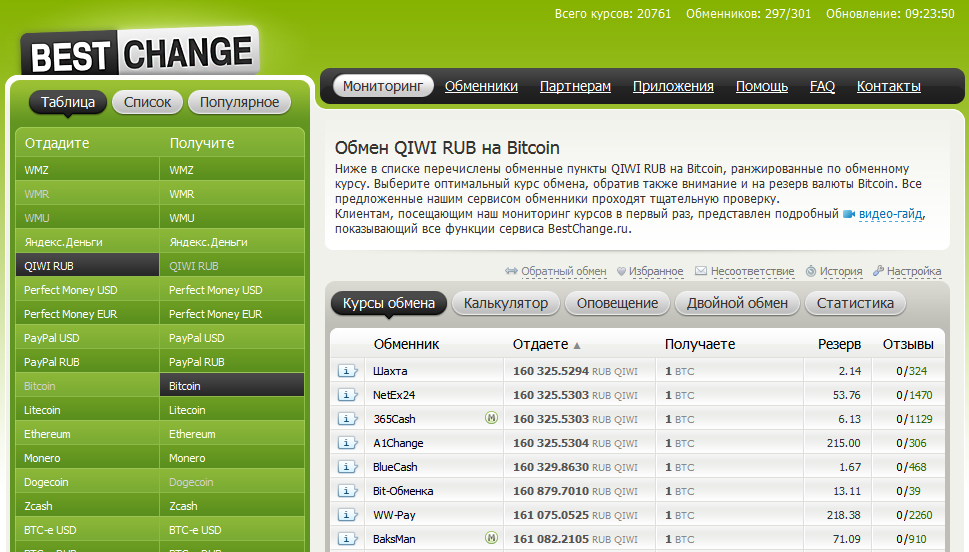
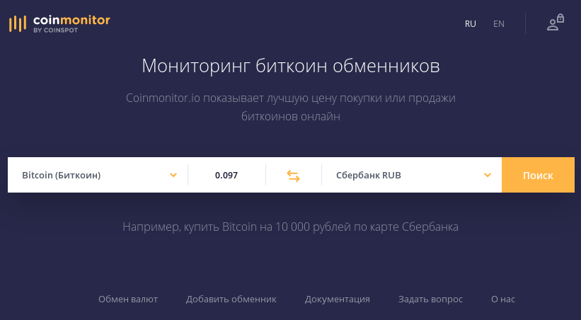
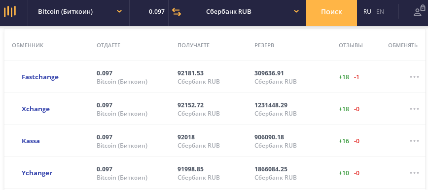
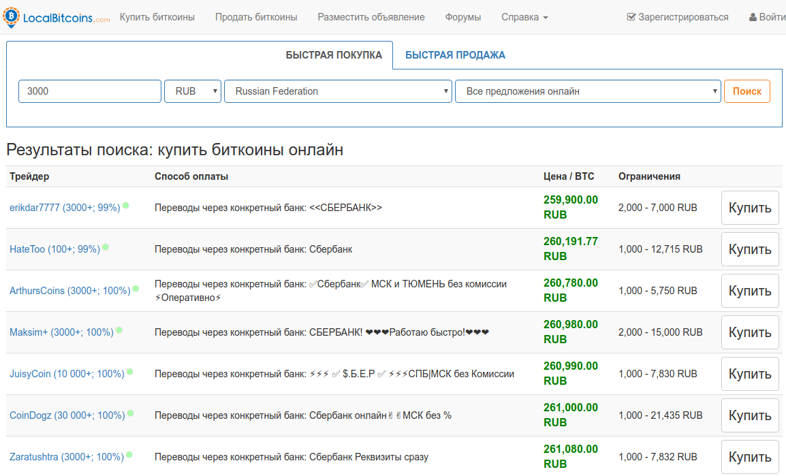

bestchange.ru
Для нахождения самого выгодного обменного пункта, можно воспользоваться сервисами мониторинга. Один из самых известных русскоязычных сервисов мониторинга - это BESTExchange.
Выглядит он вот так:

В левой части выбирается пара валют: "с какой валюты" и "на какую валюту" поменять. И сразу, без нажатия ОК или каких других кнопок, список обменников начнет обновляться.
coinmonitor.io
Есть еще один очень хороший сервис - coinmonitor.io, русскоязычная страница находится здесь:
Выглядит он так:

Поиск обменников выглядит так:

Иногда здесь попадаются лучшие предложения, чем в bestchange.ru.
localbitcoins.com
Еще один вариант - сервис https://localbitcoins.com. В нем есть поиск по странам, есть там и Российкая Федерация. В поиске отображаются частные лица и компании, которые занимаются переводом средств, например:

Здесь никто не даст гарантий что вас не обманут, но у обменников можно посмотреть отзывы, репутацию и прочие параметры - сколько он находится на площадке, какие суммы переводил и т. д.
Иногда обменники, чтобы попасть в первые строки рейтингов, дают некорректную или неполную информацию о своих курсах. Например, курс обмена может быть хорошим, но на самом сайте обменника окажется, что за проведение транзакции взымается дополнительная фиксированная плата. В этом случае надо иметь список относительно доверенных обменников, в которых нормальные курсы и нет скрытых платежей. Можно посмотреть на:
Но не факт, что эти обменники со временем не изменят своих тарифов.
Как работают агрегаторы обменников?
Учитывая, что рекламы никакой нет, то похоже что все эти агрегаторы обменников имеют какую-то долю при перенаправлении пользователя на тот или иной обменник. Здесь получается конфликт интересов: агрегатор с одной стороны должен быть объективным, но с другой стороны должен перенаправлять на те обменники, которые отстегивают ему большую комиссию. Как это противоречие решается, пока непонятно.